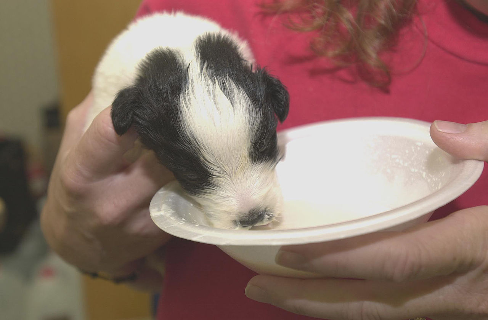
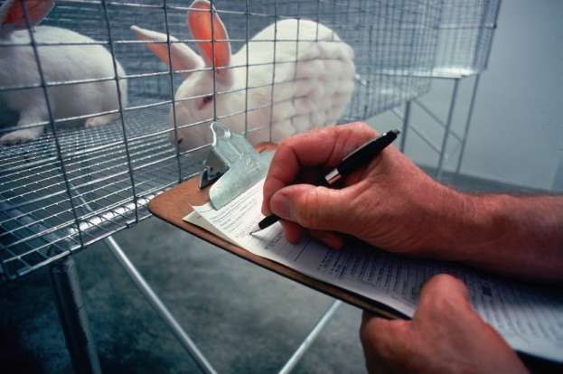
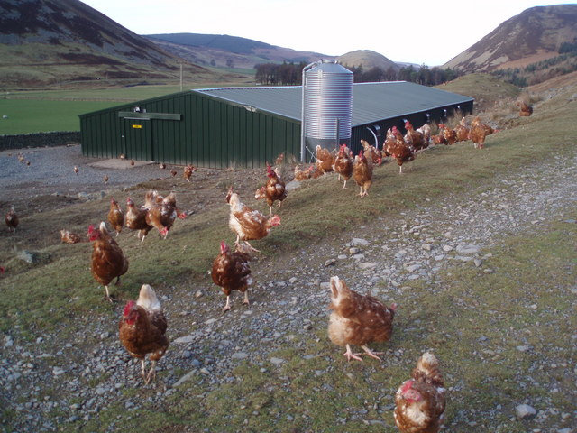
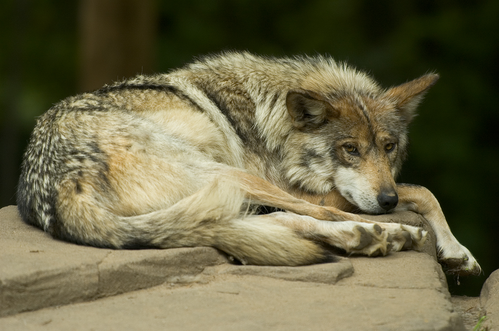
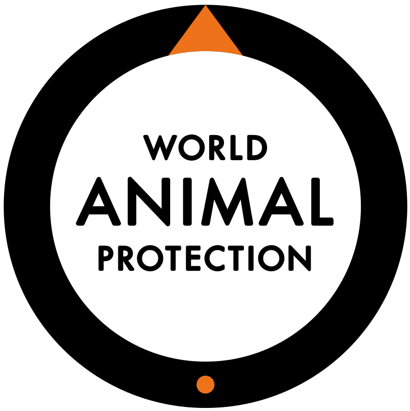

About Animal Welfare

Animal welfare is the well-being of nonhuman animals. The standards of "good" animal welfare vary considerably between different contexts. These standards are under constant review and are debated, created and revised by animal welfare groups, legislators and academics worldwide. Animal welfare science uses various measures, such as longevity, disease, immunosuppression, behavior, physiology, and reproduction, although there is debate about which of these indicators provide the best information.
Respect for animal welfare is often based on the belief that nonhuman animals are sentient and that consideration should be given to their well-being or suffering, especially when they are under the care of humans.[4] These concerns can include how animals are slaughtered for food, how they are used in scientific research, how they are kept (as pets, in zoos, farms, circuses, etc.), and how human activities affect the welfare and survival of wild species.
There are two forms of criticism of the concept of animal welfare, coming from diametrically opposite positions. One view, held by some thinkers in history, holds that humans have no duties of any kind to animals. The other view is based on the animal rights position that animals should not be regarded as property and any use of animals by humans is unacceptable. Accordingly, some animal rights proponents argue that the perception of better animal welfare facilitates continued and increased exploitation of animals. Some authorities therefore treat animal welfare and animal rights as two opposing positions. Others see animal welfare gains as incremental steps towards animal rights.
There are two forms of criticism of the concept of animal welfare, coming from diametrically opposite positions. One view, held by some thinkers in history, holds that humans have no duties of any kind to animals. The other view is based on the animal rights position that animals should not be regarded as property and any use of animals by humans is unacceptable. Accordingly, some animal rights proponents argue that the perception of better animal welfare facilitates continued and increased exploitation of animals.[5][6] Some authorities therefore treat animal welfare and animal rights as two opposing positions.[7][page needed][8][9] Others see animal welfare gains as incremental steps towards animal rights.
What are animal welfare issues?

- Animal testing
- Abandoned pets
- Behavioral enrichment
- Blood sport
- Cruelty to animals
- Feral cat
- Hunting
- Overpopulation in companion animals
- Overview of discretionary invasive procedures on animals
- Poaching
- Puppy mills
- Whaling
Farm Animals

A major concern for the welfare of farm animals is factory farming in which large numbers of animals are reared in confinement at high stocking densities. Issues include the limited opportunities for natural behaviors, for example, in battery cages, veal and gestation crates, instead producing abnormal behaviors such as tail-biting, cannibalism, and feather pecking, and routine invasive procedures such as beak trimming, castration, and ear notching. More extensive methods of farming, e.g. free range, can also raise welfare concerns such as the mulesing of sheep, predation of stock by wild animals, and biosecurity.
Farm animals are artificially selected for production parameters which sometimes impinge on the animals' welfare. For example, broiler chickens are bred to be very large to produce the greatest quantity of meat per animal. Broilers bred for fast growth have a high incidence of leg deformities because the large breast muscles cause distortions of the developing legs and pelvis, and the birds cannot support their increased body weight. As a consequence, they frequently become lame or suffer from broken legs. The increased body weight also puts a strain on their hearts and lungs, and ascites often develops. In the UK alone, up to 20 million broilers each year die from the stress of catching and transport before reaching the slaughterhouse.
Another concern about the welfare of farm animals is the method of slaughter, especially ritual slaughter. While the killing of animals need not necessarily involve suffering, the general public considers that killing an animal reduces its welfare.This leads to further concerns about premature slaughtering such as chick culling by the laying hen industry, in which males are slaughtered immediately after hatching because they are superfluous; this policy occurs in other farm animal industries such as the production of goat and cattle milk, raising the same concerns.
Wild Animal Welfare
In addition to cetaceans, the welfare of other wild animals has also been studied, though to a lesser extent than that of animals in farms. Research in wild animal welfare has two focuses: the welfare of wild animals kept in captivity and the welfare of animals living in the wild. The former has addressed the situation of animals kept both for human use, as in zoos or circuses, or in rehabilitation centers. The latter has examined how the welfare of non-domesticated animals living in wild or urban areas can be affected by humans or for natural factors causing wild animal suffering.
Animal welfare and rights in India
India's first national animal welfare law, the Prevention of Cruelty to Animals Act, 1960, criminalizes cruelty to animals, though exceptions are made for the treatment of animals used for food and scientific experiments. The 1960 law also created the Animal Welfare Board of India to ensure the anti-cruelty provisions were enforced and promote the cause of animal welfare.
Legislations

Subsequent laws have placed regulations and restrictions on the use of draught animals, the use of performing animals, animal transport, animal slaughter, and animal experimentation.
The Breeding of and Experiments on Animals (Control and Supervision) Rules, 1998 sets general requirements for breeding and using animals for research. A 2006 amendment specifies that experimenters must first try to use animals "lowest on the phylogenetic scale", use the minimum number of animals for 95% statistical confidence, and justify not using non-animal alternatives. A 2013 amendment bans the use of live animal experiments in medical education. In 2014 India became the first country in Asia to ban all testing of cosmetics on animals and the import of cosmetics tested on animals.
In 2013 India made it illegal to use captive dolphins for public entertainment.
In 2017 The Ministry of Environment, Forest and Climate Change has released four new Gazette notifications under the Prevention of Cruelty to Animals Act, 1960 to regulate dog breeders, animal markets, and aquarium and “pet” fish shop owners .
India has a grade of C out of possible grades A,B,C,D,E,F,G on World Animal Protection's Animal Protection Index.